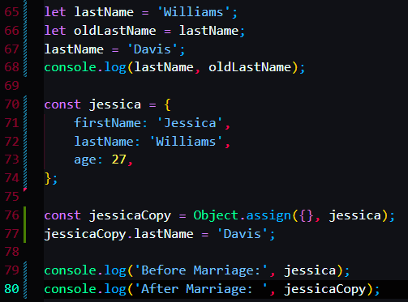

resolving the problem from the last course.
by using a function called Object.assign()
this function assigned the jessica object completely into a new object{} and the value of returning was passed on to the new const jessicaCopy variable.

this was the outcome
it creates a new address
there are still other problems, which is that you can't use this in a object thats within another object.
So this is the shallow copy. Cause this only solve the problem on the first level.


To actually do that we need the deep cloning, which will be in later sections.